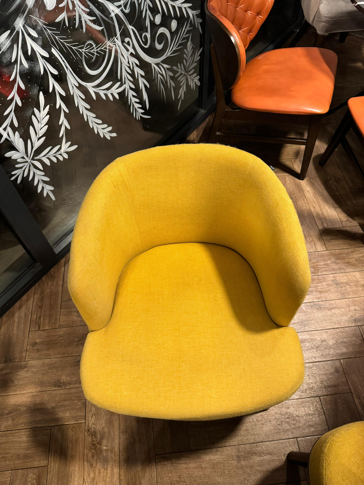

Čišćenje stanova
Detaljno čišćenje doma
Za stanove i kuće kojima je potreban uredan, osvežen i reprezentativan izgled bez opterećenja za vlasnike.

MS Sjaj · Kragujevac
Dubinsko čišćenje nameštaja, stanova i lokala.
Profesionalno čišćenje nameštaja, prostora posle radova, kancelarija i lokala u Kragujevcu i okolini.
Prvo razumemo stanje prostora, pa predlažemo tretman koji ima smisla za taj konkretan slučaj.
Za stanove i kuće kojima je potreban uredan, osvežen i reprezentativan izgled bez opterećenja za vlasnike.

Kuhinje, kupatila, detalji i površine koje najviše utiču na utisak čistoće.

Kancelarije, saloni i manji poslovni enterijeri koji treba da ostave ozbiljan prvi utisak.

Završni tretman za prostor koji mora da izgleda spreman za useljenje ili prezentaciju.
Najviše se vidi u sitnicama: komunikaciji, ritmu rada i završnoj proveri prostora.
Pre dolaska znamo šta radimo, koje zone su prioritet i kakav rezultat očekujete.
Tim radi organizovano, bez nepotrebnog prekidanja vašeg dana ili rada firme.
Na kraju prolazimo detalje koji odlučuju da li prostor zaista izgleda spremno.
Na početnoj izdvajamo jedno jasno poređenje, a ostale radove možete otvoriti posebno.

Pomerite klizač i pogledajte kako dubinski tretman menja izgled nameštaja.
Dokaz rada
Pre/posle prikaz stolice stavlja rezultat ispred obećanja: jasnija boja, čistija tekstura i nameštaj spreman za korišćenje.
Tražili smo tim za čišćenje kancelarije koji radi diskretno i precizno. MS Sjaj je ispunio baš to, bez ometanja svakodnevnog rada.
Pošaljete upit ili nas pozovete, a mi definišemo tip prostora, obim rada, termin i očekivani rezultat pre dolaska tima.
Da. Dubinsko čišćenje radimo za stanove, kuće, kuhinje, kupatila, detaljne kontaktne zone i zahtevnije završne tretmane.
Moguće je. Nakon prvog angažmana možemo definisati ritam održavanja koji odgovara vašem prostoru i obavezama.
Ostavite osnovne podatke o prostoru, a mi ćemo poslati jasan predlog usluge i termin koji se uklapa u vaš raspored.